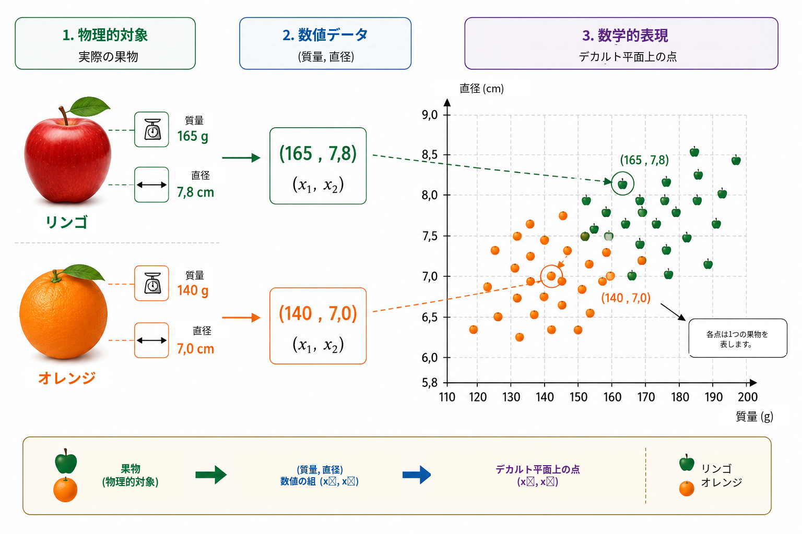
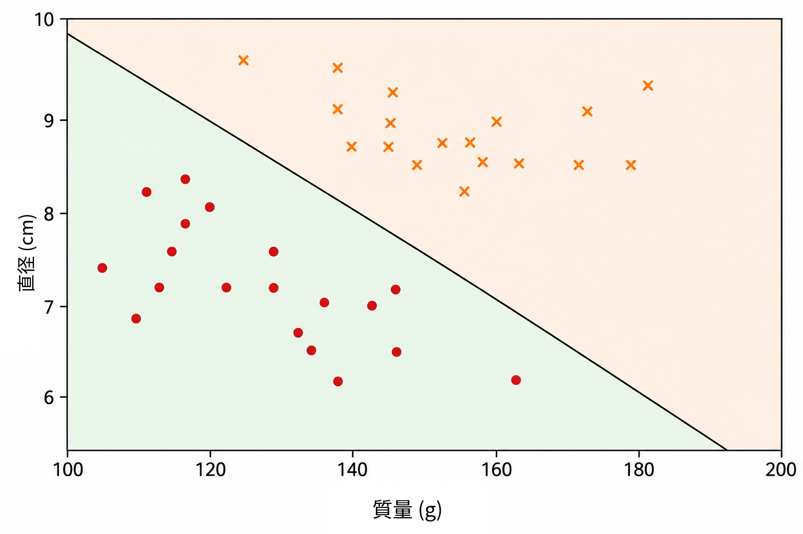
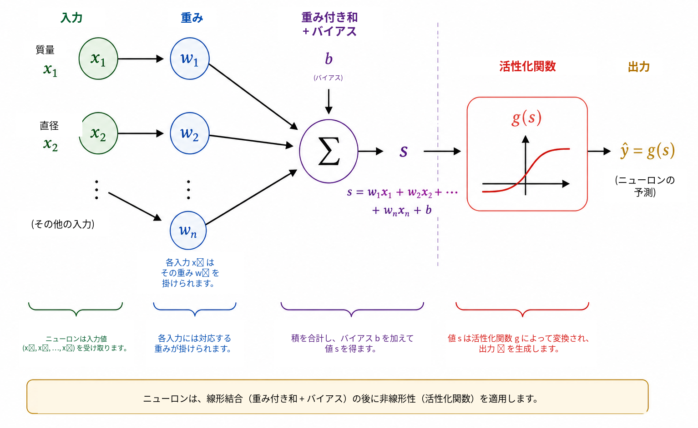
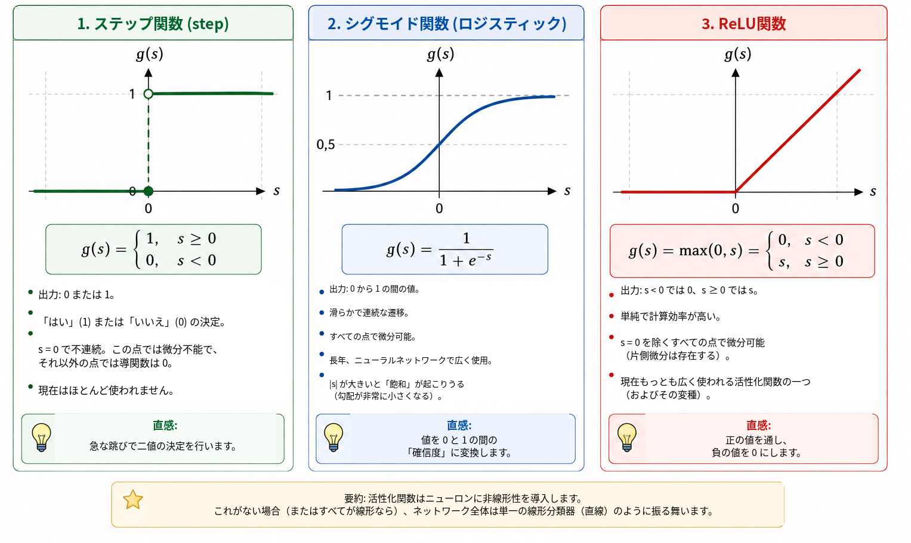
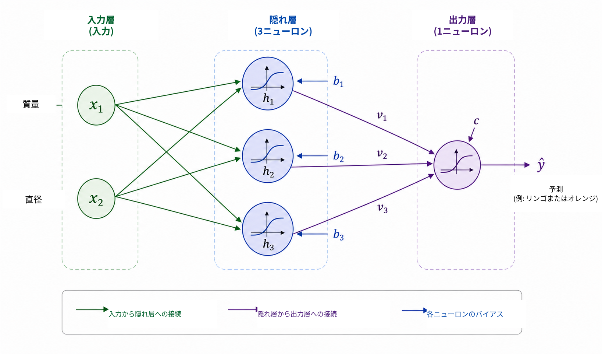
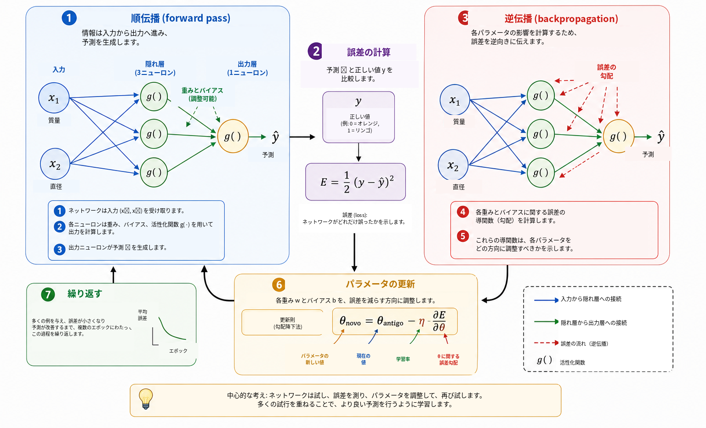
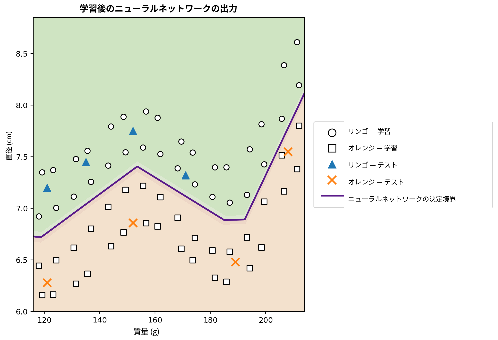

コンピュータはいつ学習できるのか？
日常生活では，私たちはほとんど意識することなく分類の判断を行っている。果物を見ればすぐにリンゴかオレンジかを見分け，携帯電話にメッセージが届けば通常の会話と不要な広告を区別する。医療分析では複数の測定値を組み合わせて判断を支援でき，金融機関では信用供与の前にさまざまな情報が評価される。これらの例ではいずれも，複数の特徴を同時に考慮して一つの答えを得ている。
多くの従来型コンピュータプログラムでは，その答えを生み出す規則をプログラマが明示的に記述する。この方法は，規則が既知で明確に表現できる場合には有効である。しかし，データの変動が大きい場合や，良い判断に必要な条件をすべて事前に記述することが難しい場合には，この方法は十分に機能しなくなる。そこで自然に次の問いが生じる。
判断規則をあらかじめ与える代わりに，例からその規則を学ぶプログラムを作ることはできるだろうか？
これは，データからモデルを適合させる方法を扱う人工知能の一分野である機械学習の中心的な考え方の一つである 。教師あり学習では，アルゴリズムは正しい答えが付いた例を受け取り，学習に使われなかった例に対しても有用な予測を行えるモデルを求める。この目的のために開発された多くのモデルの中で，人工ニューラルネットワークは画像認識，自然言語処理，信号解析，時系列予測などで重要な役割を果たしている 。
ニューラルネットワークを数学，計算，学校教育を結ぶ題材として用いる試みは，Batista と Martins によって Professor de Matemática Online ですでに論じられている 。そこでは教員教育，Python，数字認識を組み合わせた活動が紹介されている。本稿はそれを補完する別の道を取る。主な目的は，小さなニューラルネットワーク内部の数学を明らかにし，解析幾何から出発して，勾配の計算と逆伝播の手作業による実装までを段階的にたどることである。
現代の応用は非常に高度に見えるが，ニューラルネットワークの数学的核心は比較的馴染みのある考え方から導入できる。基本的には，ニューラルネットワークはデータに基づいてパラメータが調整される関数の合成である。まず単純な幾何学的問題を扱い，分離直線を人工ニューロンとして捉え直し，複数のニューロンを接続し，活性化関数の役割を調べ，導関数を用いてネットワークのパラメータを自動的に調整する方法を示す。その後，数式とコードの直接的な対応を保ちながら，完全な小規模例を Python で実装する。
問題を数学的に表現する
ニューラルネットワークの仕組みを理解するために，意図的に単純な問題から始める。すなわち，リンゴとオレンジを区別する問題である。果物には色，質量，直径，表面の質感，香りなど，分類に役立ちうる多くの特徴がある。しかし最初の数学モデルに，これらすべての複雑さを含める必要はない。ここでは，容易に測定できる二つの量だけを用いる。質量をグラムで，直径をセンチメートルで測る。
したがって，各果物を順序対 \[(x_1,x_2),\] で表し， \[x_1=\text{質量} \qquad\text{および}\qquad x_2=\text{直径}\] とする。
たとえば \((155,\;7.2)\) は，質量 \(155\) g，直径 \(7.2\) cm の果物を表す。物理的な物体を二つの数値測定値に置き換えることで，各果物をデカルト平面上の点に対応させる。第1座標が質量，第2座標が直径である。図 1 は，仮想的なリンゴとオレンジの集合についてこの表現を示している。

この変換によって，問題の見え方が変わる。リンゴやオレンジを直接どう認識するかと問う代わりに，二つのクラスに属する点を平面上でどのように分離できるか，という幾何学的な問いを立てられる。この視点の変更は機械学習において本質的である。画像，文章，音声，実験信号はいずれも，アルゴリズムで処理する前に数値表現へ変換しなければならない。本例では各物体は二つの座標しか持たないが，実際の応用では表現が数百，数千，あるいは数百万の成分を含むこともある。原理は同じであり，各例を数値の集合に対応させ，モデルはその表現を望ましい答えへ写す規則を求める。
まず最も単純な幾何学的規則から始め，一本の直線だけでリンゴの点とオレンジの点を十分に分離できるかを考える。
分類器としての直線
各果物をデカルト平面上の点として表すと，分類は幾何学的問題になる。一本の直線でリンゴとオレンジを分けられるだろうか。この問いは，線形分類器と呼ばれる重要な機械学習手法の基本的な考え方を表している。
図 2 のように，データ点の集まりを横切る一本の直線を考える。この直線は平面を二つの半平面に分ける。リンゴの点の大部分が一方に，オレンジの点の大部分が他方にあるなら，新しい果物が直線のどちら側に位置するかを分類規則として使える。質量と直径を測り，果物を点として表し，その点がどちらの半平面にあるかを調べればよい。

デカルト平面 \((x_1,x_2)\) では，直線を \[w_1x_1+w_2x_2+b=0, \qquad (w_1,w_2)\neq(0,0)\] と表せる。
ベクトル \((w_1,w_2)\) は直線に垂直であり，その向きを決める。一方，パラメータ \(b\) は直線の位置に関与する。この表現にはわずかな冗長性がある。\(w_1,w_2,b\) を同じ非零定数倍しても，同じ直線が得られる。したがって境界を記述するパラメータは一意ではない。また，それらの数値的な解釈は変数の尺度にも依存する。質量はグラム，直径はセンチメートルで測定されるので，単位の違いを考慮せずに \(w_1\) と \(w_2\) の数値の大きさを直接比較するべきではない。
直線の方程式そのものを使えば，点が境界のどちら側にあるかを簡単に判定できる。スコアを \[s(x_1,x_2)=w_1x_1+w_2x_2+b\] と定義する。
\(s(x_1,x_2)=0\) なら点は直線上にある。\(s(x_1,x_2)>0\) なら一方の半平面にあり，\(s(x_1,x_2)<0\) なら他方にある。正のスコアをリンゴ，負のスコアをオレンジに対応させると，規則は \[\begin{cases} s(x_1,x_2)\geq 0 & \Longrightarrow \text{リンゴ},\\ s(x_1,x_2)<0 & \Longrightarrow \text{オレンジ} \end{cases}\] となる。
たとえば，境界が \[w_1=\frac{1}{10}, \qquad w_2=2, \qquad b=-30\] で定められているとする。質量 \(160\) g，直径 \(7.8\) cm の果物については， \[\begin{aligned} s &=\frac{1}{10}\times160+2\times7.8-30\\ &=16+15.6-30\\ &=1.6 \end{aligned}\] である。スコアが正なので，この点はリンゴに対応させた半平面にある。したがってこの分類器は，この果物をリンゴと判定する。
\(w_1,w_2,b\) のどのような選び方でも良い分類が得られるわけではない。二つのグループをうまく分離できない直線もあれば，誤りの少ない直線もある。学習問題とは，ラベル付きの既知の例を用いて，モデル誤差を表す量を小さくするパラメータ値を求めることにほかならない。直線の位置を直接プログラムするのではなく，アルゴリズムがデータから係数を調整するようにしたい。
クラスがおおよそ線形分離可能なら，一本の直線で十分に機能する場合がある。しかし，より複雑なデータ集合では非線形な境界が必要になる。その限界を扱う前に，いま構成した分類器を基本的な計算単位，すなわち人工ニューロンとして捉え直す。
人工ニューロン
前節では， \[s=w_1x_1+w_2x_2+b\] という式を使って，果物が直線のどちら側にあるかを決めた。同じ式は，人工ニューロンが行う計算の最初の段階とみなすことができる。ニューロンは数値入力を受け取り，重みとバイアスを用いてそれらを組み合わせ，その後，数学的な関数を適用して出力を得る。
本例では入力は質量 \(x_1\) と直径 \(x_2\) である。各入力には重みと呼ばれるパラメータが掛けられ，その積を，バイアスと呼ばれる定数項 \(b\) とともに加える。図 3 にこの計算を模式的に示す。

重みは，入力の変化がスコアにどのような影響を与えるかを決める。\(x_2\) と他のすべての量を固定すると，\(x_1\) の変化 \(\Delta x_1\) は \(s\) を \(w_1\Delta x_1\) だけ変化させる。同様に，\(x_2\) の変化 \(\Delta x_2\) はスコアを \(w_2\Delta x_2\) だけ変える。符号も重要である。正の重みでは入力が増えるとスコアも増え，負の重みでは逆の効果が生じる。ただし，異なる変数が異なる単位や尺度を持つ場合には，この解釈には注意が必要である。そのため実用的な実装では，学習前に入力データを正規化または標準化することが多い。
バイアス \(b\) はアフィン変換の定数項である。幾何学的には，決定境界を平行移動させる役割を持つ。\(b=0\) なら， \[w_1x_1+w_2x_2=0\] という式により直線は原点を通らなければならない。バイアスがあれば，境界を別の位置へ移動できる。言い換えれば，\(x_1=x_2=0\) のときスコアは単に \(s=b\) である。
スコアは必ずしもニューロンの最終出力ではない。一般には，そこに活性化関数 \(g\) を適用する。 \[\widehat{y}=g(s)=g\left(w_1x_1+w_2x_2+b\right).\] したがって計算は二段階からなる。 \[\begin{aligned} s &= w_1x_1+w_2x_2+b,\\[4pt] \widehat{y} &= g(s). \end{aligned}\]
前節のパラメータ値を用いると \(s=1.6\) である。ステップ関数 \[g(s)= \begin{cases} 1, & s\geq0,\\ 0, & s<0 \end{cases}\] を選べば，\(\widehat{y}=g(1.6)=1\) となる。ここで採用した規則では，この果物はリンゴと分類される。この活性化関数では \(s\) がゼロを横切ると判断が変化するので，クラス境界はちょうど \[w_1x_1+w_2x_2+b=0\] である。
したがって，一つのニューロンは調整可能なパラメータを持つ単純な数学的対象である。その真の重要性は，多数のニューロンを接続したときに現れる。しかしネットワークを構成する前に，なぜ活性化関数が不可欠なのかを理解しておく必要がある。
なぜ活性化関数が必要なのか？
ニューロンはまずアフィン変換によってスコアを計算し，その後に活性化関数を適用する。この第二段階は，ニューラルネットワークが複雑な関係を表現するために不可欠である。その理由を見るため，活性化関数をまったく使わないネットワークを考えよう。その場合，すべてのユニットは \[y=w_1x_1+w_2x_2+b\] の形になる。
一次元の例として，第1のユニットが \[h=ax+b\] を出力し，第2のユニットが \[y=ch+d\] を計算するとする。代入すれば， \[y=c(ax+b)+d=acx+(cb+d)\] となり，これは依然として \(x\) のアフィン関数である。多次元でも同じであり，アフィン変換をいくつ合成しても結果はアフィン変換のままである。したがって，非線形な操作を挟まずに層を増やしても，ネットワークの表現力は本質的には増えず，合成全体を一つのアフィン変換で置き換えることができる。
活性化関数はこの制約を破る。スコア \(s\) を計算した後，ニューロンは通常，非線形写像 \[h=g(s)\] を適用する。このようなユニットを複数接続すると，得られる合成は一つのアフィン変換には還元できなくなる。その結果，ネットワークはより複雑な決定境界を構成できる。
最も単純な活性化関数はステップ関数 \[g(s)= \begin{cases} 1, & s\geq0,\\ 0, & s<0 \end{cases}\] である。これは二値の判断を与えるため，分類の考え方を理解するには非常に有用である。しかしその導関数は \(s\neq0\) で \(0\)，\(s=0\) では定義されない。勾配に基づく学習では，パラメータをどのように変えるかを決めるために導関数を用いるので，ステップ関数はその学習機構には適していない。
代替の一つがシグモイド関数 \[\sigma(s)=\frac{1}{1+e^{-s}}\] である。これはすべての実数を \(0\) と \(1\) の間の値へ写す。\(s\) が非常に負なら出力は \(0\) に近づき，\(s\) が非常に正なら \(1\) に近づく。その中間では滑らかに変化する。シグモイド関数はすべての点で微分可能で， \[\sigma'(s)=\sigma(s)\bigl(1-\sigma(s)\bigr)\] を満たす。出力が \(0\) と \(1\) の間にあるため，二値分類器の出力層でよく使われる。適切な損失関数を用いた確率的な定式化では，出力を「クラス \(1\) である確率」の推定値と解釈できる。ただし隠れ層でシグモイドを使うと，入力の絶対値が大きいところで導関数が非常に小さくなり，深いネットワークにおける勾配消失の原因の一つとなる。
隠れ層で広く使われる活性化関数が ReLU（Rectified Linear Unit）である。 \[\mathrm{ReLU}(s)=\mathrm{max}(0,s) = \begin{cases} 0, & s<0,\\ s, & s\geq0. \end{cases}\] ReLU は二つの線形部分から構成されているが，全体としては線形ではない。その導関数は \(s<0\) で \(0\)，\(s>0\) で \(1\) である。\(s=0\) では通常の導関数は存在しないため，ソフトウェア実装では勾配に対して何らかの約束を採用する。正の入力に対しては，\(s\) が大きくなっても導関数は小さくならないため，シグモイドに見られる飽和の一つを避けられる。
図 4 は，これら三つの活性化関数を視覚的に比較している。ステップ関数の急激な跳び，シグモイドの滑らかな遷移，ReLU の傾きの変化が確認できる。

主な性質を以下にまとめる。
| 関数 | 出力 | 導関数 | 典型的な用途 |
|---|---|---|---|
| ステップ | \(\{0,1\}\) | \(s\neq0\) では \(0\)，\(s=0\) では未定義 | 歴史的モデル，教育的な例 |
| シグモイド | \((0,1)\) | すべての \(s\) で存在 | 二値分類の出力層 |
| ReLU | \([0,\infty)\) | \(s<0\) では \(0\)，\(s>0\) では \(1\) | 隠れ層 |
これらの関数は細部こそ異なるが，共通する概念的役割は非線形性を導入することである。この非線形性によって，次節の小さなネットワークは一本の直線では表現できない関係を表せるようになる。
さらに学びたい読者には，Haykin がニューラルネットワークの古典的な解説を与えており，Goodfellow，Bengio，Courville は活性化関数と深層ネットワークの学習をより広い文脈で論じている。Nielsen の無料公開されているテキスト は，ニューロン，活性化関数，学習について直感を養ううえで特に読みやすい。
小さなニューラルネットワークを構成する
ここでは，二つの入力，三つのニューロンを含む一つの隠れ層，そして一つの出力ニューロンからなるネットワークを考える。入力は引き続き \[x_1=\text{質量}, \qquad x_2=\text{直径}\] であり，図 5 に示すように，どちらも各隠れニューロンへ入力される。

隠れ層の出力を \(h_1,h_2,h_3\) とする。各ニューロンは同じ二つの入力を受け取るが，それぞれ独自の重みとバイアスを持つ。 \[\begin{aligned} h_1&=g\left(w_{11}x_1+w_{12}x_2+b_1\right),\\[4pt] h_2&=g\left(w_{21}x_1+w_{22}x_2+b_2\right),\\[4pt] h_3&=g\left(w_{31}x_1+w_{32}x_2+b_3\right). \end{aligned}\]
三つのニューロンはすべて同じ質量と直径を受け取るが，パラメータが異なるため，異なる応答を生成できる。学習では，これらのパラメータを調整して，中間的な活性が分類に役立つようにする。
次に \(h_1,h_2,h_3\) を出力ニューロンへ渡す。出力ニューロンは \[s_{\mathrm{out}}=v_1h_1+v_2h_2+v_3h_3+c\] を計算し， \[\widehat{y}=g_{\mathrm{out}}\left(s_{\mathrm{out}}\right)\] を出力する。今回の二値分類問題では，出力にシグモイドを用いる。 \[\widehat{y}=\sigma\left(v_1h_1+v_2h_2+v_3h_3+c\right), \qquad 0<\widehat{y}<1.\]
リンゴを \(y=1\)，オレンジを \(y=0\) とし，しきい値を \(0.5\) とすれば，クラス判定は \[\widehat{y}\geq0.5 \Longrightarrow \text{リンゴ}, \qquad \widehat{y}<0.5 \Longrightarrow \text{オレンジ}\] となる。したがって，\(1\) に近い値はリンゴと強く対応し，\(0\) に近い値はオレンジと対応する。前述のとおり，\(\widehat{y}\) を数値的に確率として解釈するには，モデルと学習方法に関する追加の仮定が必要である。ここで用いる分類規則では，\(\widehat{y}\) を連続値のネットワーク出力とみなせば十分である。
この構成の中心的な特徴は，中間表現 \[(x_1,x_2) \longrightarrow (h_1,h_2,h_3) \longrightarrow \widehat{y}\] にある。ネットワークは二つの特徴量を受け取り，最終的な答えを出す前に三つの新しい量を構成する。これらの活性は人が手作業で選ぶのではない。重みとバイアスに依存しており，したがって学習によってパラメータが変わると活性も変化する。
このネットワークは小さいにもかかわらず，すでに13個の調整可能なパラメータを持つ。三つの隠れニューロンには \[3(2+1)=9\] 個のパラメータがあり，出力ニューロンには \[3+1=4\] 個ある。したがって， \[9+4=13\] である。
同じ数え上げは行列表記にするとより明瞭になる。 \[\mathbf{x}= \begin{bmatrix} x_1\\x_2 \end{bmatrix}, \qquad W^{(1)}= \begin{bmatrix} w_{11}&w_{12}\\ w_{21}&w_{22}\\ w_{31}&w_{32} \end{bmatrix}, \qquad \mathbf{b}^{(1)}= \begin{bmatrix} b_1\\b_2\\b_3 \end{bmatrix}.\] すると隠れ層は簡潔に \[\mathbf{h}=g\left(W^{(1)}\mathbf{x}+\mathbf{b}^{(1)}\right)\] と書ける。ここで \(g\) は成分ごとに作用する。出力については \[\widehat{y} = \sigma\left(W^{(2)}\mathbf{h}+b^{(2)}\right),\] ただし \[W^{(2)}= \begin{bmatrix} v_1&v_2&v_3 \end{bmatrix}\] である。
この表記は，後に Python プログラムで現れる構造を先取りしている。果物を入力し，\(\widehat{y}\) が得られるまで順に活性を計算する過程を，順伝播（forward propagation）またはforward pass と呼ぶ。残る中心的な問いは，予測がデータに合うように13個のパラメータを自動的に決めるにはどうすればよいか，ということである。
ニューラルネットワークはどのように学習するのか？
重みとバイアスは事前には分からない。正しい答えが既知である例を使って調整する必要がある。この過程を学習と呼び，次のサイクルで要約できる。 \[\boxed{\text{予測}} \longrightarrow \boxed{\text{誤差を測る}} \longrightarrow \boxed{\text{パラメータを調整}} \longrightarrow \boxed{\text{繰り返す}}.\]
質量 \(140\) g，直径 \(7.0\) cm の果物を考え，正しいクラスはオレンジ，すなわち \(y=0\) とする。学習のある時点でネットワークが \(\widehat{y}=0.80\) を出力したとしよう。予測と目標値のずれを測る単純な方法の一つが二乗誤差 \[E=\frac{1}{2}\left(y-\widehat{y}\right)^2\] である。この例では \[E=\frac{1}{2}(0-0.80)^2=0.32\] となる。
この式は，一つの例に対する損失関数である。二乗なので \(E\geq0\) であり，目標値から遠い予測ほど大きな罰を受ける。係数 \(1/2\) は最小値の位置を変えないが，微分を簡単にする。二値分類では，特に交差エントロピーなど別の損失もよく使われる。ここでは代数が透明であり，最適化と逆伝播を導入するのに十分であるため，二乗誤差を用いる 。
学習データが \(N\) 個の例を含むなら，全体の尺度として平均損失 \[J=\frac{1}{N}\sum_{i=1}^{N}E_i\] を使える。各予測はネットワークの重みとバイアスに依存するので，\(J\) もそれらすべてのパラメータに依存する。学習とは，\(J\) を小さくするパラメータ値を探索することである。
調整の仕組みを理解するため，まず一つの重み \(w\) 以外のすべてのパラメータを固定して考える。このとき損失を \(J=J(w)\) という一変数関数として見られる。図 6 は，これから説明する学習の基本段階をまとめたものである。

微積分にあまり馴染みのない読者にとって，ここで導関数は局所的な感度の尺度と考えるとよい。あるパラメータを少し変えたとき，損失がどのように変わる傾向があるかを表す。符号は，どちらの方向へ動かすと関数が局所的に増減するかを示し，大きさはその局所的変化の強さを表す。
導関数 \[\frac{\partial J}{\partial w}\] は局所的な傾きを与える。これが正なら，\(w\) を少し増やすと \(J\) も増える傾向があるため，重みは反対方向へ動かすべきである。負なら，\(w\) を増やすと局所的に \(J\) が減る傾向がある。両方の場合は \[w_{\mathrm{new}} = w_{\mathrm{old}} - \eta\frac{\partial J}{\partial w}\] とまとめて表せる。これが勾配降下法の基本的な考え方である。正の数 \(\eta\) を学習率と呼び，更新幅を制御する。小さすぎると学習が遅くなり，大きすぎると振動や不安定性が生じることがある。
多数のパラメータを持つネットワークでは，任意の重みまたはバイアスを \(\theta\) と書けば，更新は \[\theta_{\mathrm{new}} = \theta_{\mathrm{old}} - \eta\frac{\partial J}{\partial\theta}\] となる。すべての偏微分を集めたものが損失の勾配である。幾何学的には，勾配は局所的に最も速く増加する方向を指すので，負の勾配は局所的な減少方向を与える。
次に，ネットワークが複数の関数の合成であるとき，これらの導関数を計算する必要がある。順伝播では情報は \[\text{入力} \longrightarrow \text{隠れ層} \longrightarrow \text{出力}\] の向きに進む。初期の層にあるパラメータが損失にどう影響するかを求めるには，依存関係の連鎖を数学的に逆向きへたどる。この手続きが逆伝播（backpropagation）であり，本質的には連鎖律を体系的かつ効率的に適用する方法である。Rumelhart，Hinton，Williams は隠れ層を持つネットワークでこの方法が広く知られるようになった古典的文献であり，Nielsen は詳しく教育的な導出を与えている。
単純な依存関係として，\(E\) が \(\widehat{y}\) に依存し，\(\widehat{y}\) が活性 \(h\) に依存し，さらに \(h\) が重み \(w\) に依存するとする。このとき連鎖律により \[\frac{\partial E}{\partial w} = \frac{\partial E}{\partial\widehat{y}} \, \frac{\partial\widehat{y}}{\partial h} \, \frac{\partial h}{\partial w}\] を得る。各因子は，\(w\) が最終的な損失に影響する過程の一段階を表す。より大きなネットワークにはこのような連鎖が多数存在し，逆伝播は中間的な導関数を再利用することで，各パラメータごとに別々に再計算することを避ける。
実際の学習では多数の例を用いる。学習集合全体を一度通過することを一つのエポックと呼ぶ。後で示す教育用プログラムのように各例の後にパラメータを更新することもできるし，大規模なネットワークで一般的なように，ミニバッチと呼ばれる小さな例の集合ごとに更新することもできる。いずれの場合も，予測，損失，勾配，更新のサイクルを多くのエポックにわたって繰り返す。
この変化を具体的に見る方法として，一つの固定された例に対する予測が学習の各段階でどう変わるかを追うことができる。再び，質量 \(140\) g，直径 \(7.0\) cm で正しいクラスがオレンジである果物を考える。表 1 は仮想的な推移を示す。これらの値は特定の実行結果ではなく，仕組みを説明するための例にすぎない。
| エポック | 予測 \(\widehat{y}\) | 損失 \(E\) | 分類 |
|---|---|---|---|
| 1 | 0.86 | 0.37 | リンゴ |
| 5 | 0.71 | 0.25 | リンゴ |
| 10 | 0.55 | 0.15 | リンゴ |
| 20 | 0.31 | 0.05 | オレンジ |
| 40 | 0.09 | 0.004 | オレンジ |
学習の初期では出力は \(1\) に近く，果物は誤ってリンゴと分類されている。パラメータが調整されるにつれて予測値は下がり，やがてしきい値 \(0.5\) を越えて正しいクラスになる。この過程で変化するのは重みとバイアスの数値であり，ネットワークの構造自体は固定されたままである。
学習データ上の損失を減らすこと自体が最終目的ではない。有用なネットワークは，パラメータの調整に使わなかった例に対しても良い予測を行わなければならない。この能力を汎化と呼ぶ。モデルが学習集合の細かな特徴に適応しすぎ，新しいデータでは性能が悪くなる現象を過学習と呼ぶ。より慎重な評価では，データを学習集合，検証集合，テスト集合に分けることが多い。学習集合はパラメータの推定に使い，検証集合はモデル開発中の選択に使い，テスト集合は最終評価のために残す。汎化とモデル評価については Faceli ら および Goodfellow，Bengio，Courville により詳しい議論がある。
これで，ニューラルネットワークにおける「学習」の数学的な意味に到達した。この文脈で学習するとは，データ上の誤差尺度を小さくし，理想的には新しい例にも汎化できるように，合成関数のパラメータを調整することである。ネットワークは予測し，損失を計算し，導関数によって各パラメータが損失にどう影響するかを求め，小さな修正を繰り返す。
数学から Python へ
ここから数式を実行可能なプログラムへ移す。目的は専用のニューラルネットワークライブラリを使うことではなく，本稿で展開した数学的操作を NumPy を使って直接実装することである 。これにより，線形結合，活性化関数，損失の計算，逆伝播，勾配降下法がコードの中にどのように現れるかを一行ずつ確認できる。
より説得力のある最終例とするため，質量–直径平面のより広い領域に分布する合成データ集合を用いる。物理的特徴は引き続き二つ，すなわちグラム単位の質量とセンチメートル単位の直径だけであるが，今回は64個の学習例を平面の広い領域に配置し，さらに8個の例を説明用のテストとして残す。データは合成したものだが，リンゴとオレンジとして不自然でない範囲に保つ。また，すべての点が少数の人工的なクラスターに集中しないようにしつつ，非線形な決定境界が生じるよう構成している。
幾何学的な考え方は単純である。質量–直径平面に基準となる曲線を定め，その曲線より上に二つの帯状領域としてリンゴを配置し，下に二つの帯状領域としてオレンジを配置する。質量と直径の両方に小さな決定論的摂動を加え，観測点がより広い領域に分布するようにする。得られる例は前の図より豊かであり，点の数が多く，領域全体に分布し，適切な決定境界も直線より明らかに曲がった形になる。
この最終的な計算実験では，隠れ層を12個の ReLU ニューロンへ拡張する。これは前節までに学んだ概念構造を変えるものではなく，より複雑な境界を表現するネットワークの能力を増やすだけである。三つのニューロンからなる教育用ネットワークの13個のパラメータに対し，ここでは49個の調整可能なパラメータを持つ。第1層に24個の重みと12個のバイアス，出力層に12個の重みと1個のバイアスがある。方程式の形はまったく同じであり，ベクトルと行列が大きくなるだけである。
完全なプログラムを以下に示す。
import numpy as np
import matplotlib.pyplot as plt
from matplotlib.lines import Line2D
plt.rcParams["font.family"] = "Noto Sans CJK JP"
def relu(s):
return np.maximum(0, s)
def relu_derivative(s):
return (s > 0).astype(float)
def sigmoid(s):
return 1 / (1 + np.exp(-s))
def base_boundary(m):
return 6.68 + 0.74*np.exp(-((m-155)/20)**2) \
+ 1.50/(1 + np.exp(-(m-202)/5))
def build_data():
masses_1 = np.linspace(118, 212, 16)
masses_2 = masses_1 + np.array([
1.2,-1.1,0.8,-1.3,1.0,-0.8,1.1,-1.0,
1.3,-0.9,0.9,-1.2,1.0,-1.0,0.8,-0.7
])
k = np.arange(16)
a1 = np.column_stack([
masses_1,
base_boundary(masses_1) + 0.22 + 0.05*np.sin(0.8*k)
])
a2 = np.column_stack([
masses_2,
base_boundary(masses_2) + 0.58 + 0.06*np.cos(0.45*k)
])
o1 = np.column_stack([
masses_1,
base_boundary(masses_1) - (0.22 + 0.04*np.cos(0.7*k))
])
o2 = np.column_stack([
masses_2,
base_boundary(masses_2) - (0.55 + 0.05*np.sin(0.5*k))
])
X_train = np.vstack([a1, a2, o1, o2])
y_train = np.array([1.0]*32 + [0.0]*32)
X_test = np.array([
[121.0, 7.20], [135.0, 7.45],
[152.0, 7.75], [171.0, 7.32],
[121.0, 6.28], [152.0, 6.86],
[189.0, 6.48], [208.0, 7.55]
])
y_test = np.array([1,1,1,1,0,0,0,0], dtype=float)
return X_train, y_train, X_test, y_test
def predict(X, mean, std, W1, b1, W2, b2):
Xn = (X - mean) / std
outputs = []
for x in Xn:
h = relu(W1 @ x + b1)
y_hat = sigmoid(W2 @ h + b2)
outputs.append(y_hat)
return np.array(outputs)
X_train, y_train, X_test, y_test = build_data()
mean = X_train.mean(axis=0)
std = X_train.std(axis=0)
Xn = (X_train - mean) / std
rng = np.random.default_rng(42)
W1 = 0.1 * rng.standard_normal((12, 2))
b1 = np.zeros(12)
W2 = 0.1 * rng.standard_normal(12)
b2 = 0.0
eta = 0.05
n_epochs = 6000
history = []
for epoch in range(n_epochs):
for i in rng.permutation(len(Xn)):
x = Xn[i]
target = y_train[i]
z1 = W1 @ x + b1
h = relu(z1)
z2 = W2 @ h + b2
y_hat = sigmoid(z2)
delta2 = (y_hat - target) * y_hat * (1 - y_hat)
dW2 = delta2 * h
db2 = delta2
delta1 = (delta2 * W2) * relu_derivative(z1)
dW1 = np.outer(delta1, x)
db1 = delta1
W1 -= eta * dW1
b1 -= eta * db1
W2 -= eta * dW2
b2 -= eta * db2
errors = []
for x, target in zip(Xn, y_train):
h = relu(W1 @ x + b1)
y_hat = sigmoid(W2 @ h + b2)
errors.append(0.5 * (target - y_hat)**2)
history.append(np.mean(errors))
def make_figure():
masses = np.linspace(116, 214, 500)
diameters = np.linspace(6.0, 8.85, 500)
M, D = np.meshgrid(masses, diameters)
grid = np.column_stack([M.ravel(), D.ravel()])
P = predict(grid, mean, std, W1, b1, W2, b2).reshape(M.shape)
fig, ax = plt.subplots(figsize=(9.2, 6.3))
ax.contourf(
M, D, P,
levels=[0.0, 0.25, 0.50, 0.75, 1.0],
colors=["#f3e0cb", "#ecd5c4", "#dbe7cf", "#cde3bf"],
alpha=0.95
)
ax.contour(M, D, P, levels=[0.5],
colors=["#5a1a8a"], linewidths=2.2)
mask = y_train == 1.0
ax.scatter(X_train[mask,0], X_train[mask,1], marker="o",
s=48, facecolors="white", edgecolors="black",
linewidths=1.1, label="リンゴ - 学習")
mask = y_train == 0.0
ax.scatter(X_train[mask,0], X_train[mask,1], marker="s",
s=48, facecolors="white", edgecolors="black",
linewidths=1.1, label="オレンジ - 学習")
mask = y_test == 1.0
ax.scatter(X_test[mask,0], X_test[mask,1], marker="^",
s=92, color="#1f77b4", label="リンゴ - テスト")
mask = y_test == 0.0
ax.scatter(X_test[mask,0], X_test[mask,1], marker="x",
s=110, color="#ff7f0e", linewidths=2.0,
label="オレンジ - テスト")
ax.set_xlabel("質量 (g)")
ax.set_ylabel("直径 (cm)")
ax.set_title("学習後のニューラルネットワークの出力")
handles = [
Line2D([0],[0], marker='o', markersize=9,
markerfacecolor='white', markeredgecolor='black',
linestyle='None', label='リンゴ - 学習'),
Line2D([0],[0], marker='s', markersize=9,
markerfacecolor='white', markeredgecolor='black',
linestyle='None', label='オレンジ - 学習'),
Line2D([0],[0], marker='^', markersize=9, color='#1f77b4',
linestyle='None', label='リンゴ - テスト'),
Line2D([0],[0], marker='x', markersize=10, color='#ff7f0e',
linestyle='None', label='オレンジ - テスト'),
Line2D([0],[0], color='#5a1a8a', lw=2.2,
label='ニューラルネットワークの決定境界')
]
ax.legend(handles=handles, loc='center left',
bbox_to_anchor=(1.02, 0.5), frameon=True)
fig.tight_layout()
plt.show()コードは本稿で最初に扱った方程式より長いが，構造は依然として明確である。関数 build_data() は64個の学習例と8個の説明用テスト例を自動的に生成する。続いて二つの変数を \[x_j^{\ast}=\frac{x_j-\mu_j}{\sigma_j}\] によって標準化する。ここで \(\mu_j\) と \(\sigma_j\) は学習集合だけから計算する。これにより，テスト集合がパラメータ推定に影響することを防ぎ，同時に質量と直径を比較可能な数値尺度へ揃える。
順伝播の本質は変わらない。違いは，第1層が12個の隠れ活性からなるベクトルを出力する点だけである。行列表記では \[\mathbf{z}^{(1)}=W^{(1)}\mathbf{x}+\mathbf{b}^{(1)}, \qquad \mathbf{h}=\mathrm{ReLU}(\mathbf{z}^{(1)}),\] \[z^{(2)}=W^{(2)}\mathbf{h}+b^{(2)}, \qquad \widehat{y}=\sigma(z^{(2)}).\] これら四つの式に，アルゴリズムの数学的核心が依然として含まれている。学習も先に導入した論理をそのまま保つ。すなわち，予測を計算し，誤差を測り，導関数を用いて感度情報を逆向きに伝播し，勾配降下法の小さな更新によってパラメータを修正する。
コードでは，出力層での逆伝播は
delta2 = (y_hat - target) * y_hat * (1 - y_hat)に現れ，隠れ層への伝播は
delta1 = (delta2 * W2) * relu_derivative(z1)に現れる。その後，すべての重みとバイアスが更新される。各エポックで例の順序を入れ替え，観測ごとにパラメータを更新しているので，この実装は基本的な確率的勾配降下法の一例である。
ここで用いた乱数シードとハイパーパラメータでは，最終的な平均損失はおおよそ \(10^{-5}\) から \(10^{-4}\) の程度となり，64個の学習例と8個の説明用テスト例はすべて期待された分類を受ける。ただし，これは厳密な統計的性能評価と解釈してはならない。データは合成であり，教育目的で構成されたものである。その役割は，比較的単純すぎない設定において，小さなニューラルネットワークが明確に非線形な決定境界を学べることを示すことにある。
図 7 は，学習後の最終的なプログラム出力を質量–直径平面上に示している。すべての学習点を表示している。強調された曲線は \(\widehat{y}=0.5\) の等値線であり，ネットワークが学習した決定境界を表す。色付きの領域はネットワークが予測する二つのクラスを示す。円は学習用リンゴ，四角は学習用オレンジ，三角はテスト用リンゴ，×印はテスト用オレンジを表す。凡例はデータ点を隠さないよう主たる描画領域の外側に配置している。

本稿は，二つの単純な点群を分ける一本の直線から始まり，ネットワークのパラメータを自動調整することで曲線状の境界が生じる，より豊かな計算例へ進んだ。数学的には何も神秘的なものを追加していない。実装は，アフィン結合，活性化関数，導関数，行列積，勾配降下法による更新を，より大きな規模で高速に整理して繰り返しているだけである 。
本稿に関連するすべての計算資料 — コードおよび実行可能な Google Colab ノートブックを含む — は https://neuralmath.org で公開している。読者はそこから例を調べ，再現し，改変するための資料へ一括してアクセスできる。
AI 利用に関する声明。
著者は，原稿作成，言語上の推敲，説明構成の整理，および教育用図の作成を支援するツールとして，OpenAI が開発した ChatGPT を使用した。本稿の最終的な内容，数学的素材の構想と展開，コード，使用した参考文献を含め，最終成果に対する責任はすべて著者が負う。